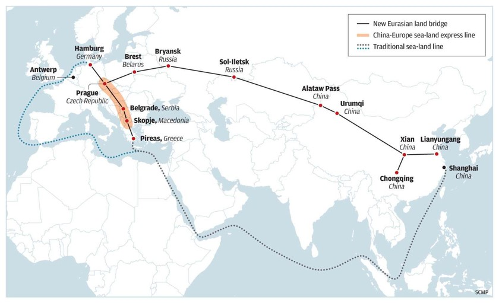
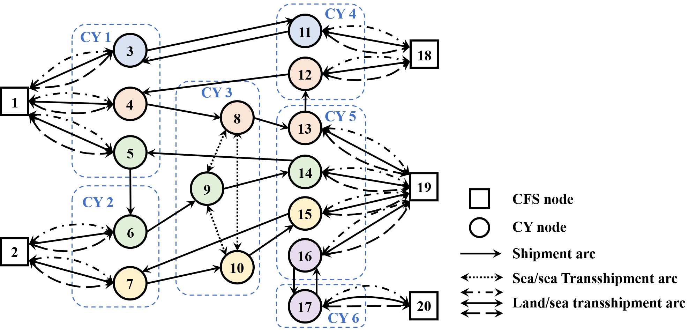
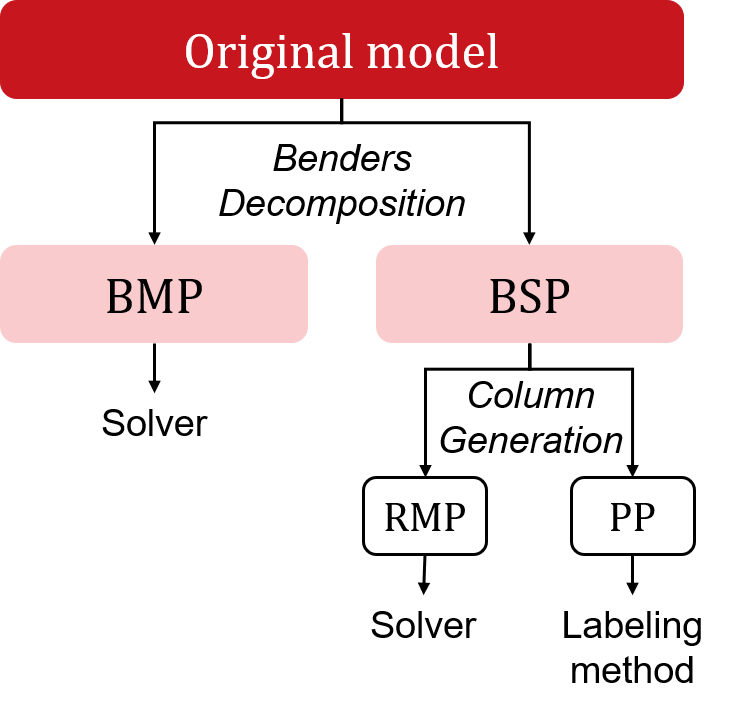

- Intermodal Container Routing Optimization with Service Requirements



- Studied the container routing problem for fulfilling the intermodal cargo shipment demand between container freight stations
- Incorporated several practical requirements to constrain the length and structure of the container routes, so as to guarantee customer satisfaction.
- Develop a mixed-integer linear programming models, with the objective of fulfilling all cargo shipment demands and minimizing total operating cost.
- Proposed a Benders decomposition-based method and multiple speed-up techniques including generating Dual Feasible Solution Cuts and diving heuristic algorithm to obtain the exact solution for the problem.
- Conducted computational results based on China-Europe Land-Sea Express instances and validated the effectiveness and efficiency of our proposed solution method. The method could reach the optimality gap of less than 10% in 2h for instances of scales with up to 20 shipping lines and 50 commodities.